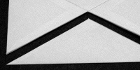
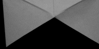
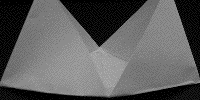
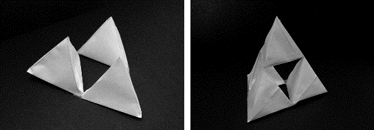

First we will discuss how to create a unit tetrahedron.
| First fold | |
| First cut |  |
| Fold again |  |
| Open and fold again |  |
| Open and fold again |
Having made individual tetrahedrons, now tape four together to make a larger shape.
To do this place and tape three small tetrahedrons together to form a base, then place and tape the fourth on top to the other three (like a pile of cannon balls). This will look like a pyramid with a hole in the middle.
Then take four of these shapes and make a larger shape in the same manner. At this stage we have used sixteen tetrahedrons.
Finally, put four of these shapes together to make the completed tetrahedron using sixty-four envelopes.
To go one more stage will require 256 envelopes in total and a lot of tape, time, patience, cleverness and cooperation to make it all fit.
|  |
| The base and the completed first stage tetrahedron |
Return to Sierpinski Tetrahedron Project.